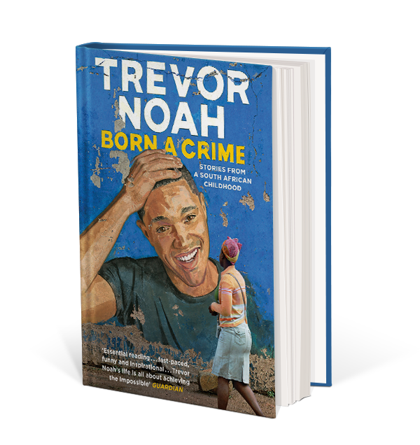

I would give it this title because even though the book reflects on how Trevor’s mother lived life the way she wanted and did not follow the rules, it also reflects more on how Trevor being a coloured boy impacted his life from birth till he was a grown boy therefore it is all about the life of a colored boy.
Born a Crime by Trevor Noah is a really good and amazing book to read and learn from. It is a book where one moment you find yourself laughing and the next moment shedding a tear and you can also find yourself just bored with it. Being my first book to ever read and finish, I honestly enjoyed it and also learned from it. I really liked how Patricia, Trevor’s mother was so bold in her ideas and knew what she wanted. She was very religious, risk-taking and so confident. I also like how Trevor was so mysterious. It was like, by going chapter by chapter I should be expecting some new drama happening. I personally can also relate to this book in a way where I was a colored girl in a community with black people only and the people at first looked at me and my family in a different way saying we are dolls or questioning if we are really human. So I really understood and related what Trevor was going through in a way since my whole family is colored. Patricia also reminds me of my grandmother though my grandmother was not that strict on religion but she is very religious and always says that we should put God first always, whether in good or bad conditions. I remember most rainy seasons, she would say that the rain is nothing to stop us from going to church, It is just Satan playing with our heads and we should go to church and prove him wrong. So I can say that I really related a lot to this book. I also like how Patricia raised Trevor, in the way where she would buy him books and tell him to write things down from a very young age. This was a really good tactic because by the time Trevor was a Teenager, He had very good vocabulary and he had a shelf of all the books he had read.

Abel never got the traditional marriage that he wanted because the woman he fell in love with was not subservient and his dream to put her in a cage backfired. In today's society, there are still some people that resonate to this quote where wives are to stay home, do all the household chores, have and take care of children and listen to the husband and do as he pleases. An example is this lady in my community who was having 3 children, doing all household chores and always listening to what the husband says. She did not like her life but also said that she cannot leave him claiming that she loves him and can do anything for him. Her husband is nothing different from Abel but as they say “Love is blind”.